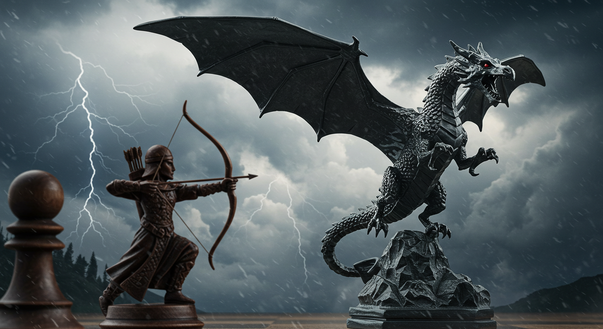

Cloud Chess follows standard chess rules, including check, checkmate, pawn promotion, and castling, with the addition of special pieces and a larger 10x10 board.
Can move 1 or 2 squares in any direction (horizontal, vertical, or diagonal). If it moves 2 squares and there's an enemy piece in the middle, it captures both pieces.
Moves like a pawn but can capture diagonally without moving. Either moves without capturing, or captures without moving.
Kings may castle with an unmoved rook when the spaces between them are clear, the king is not in check, and the king does not pass through or land on an attacked square. On the 10x10 board, the king moves two files toward the rook and the rook slides to the square the king crossed.
The game is played on a 10x10 board with the following setup:
Captured pieces are sent to your graveyard. On desktops the graveyards flank the board, while on smaller screens they slide beneath it. Each capture also adds to your score using the following values:
The live scoreboard at the top of the board tracks the totals for both sides so you can see who is ahead.
